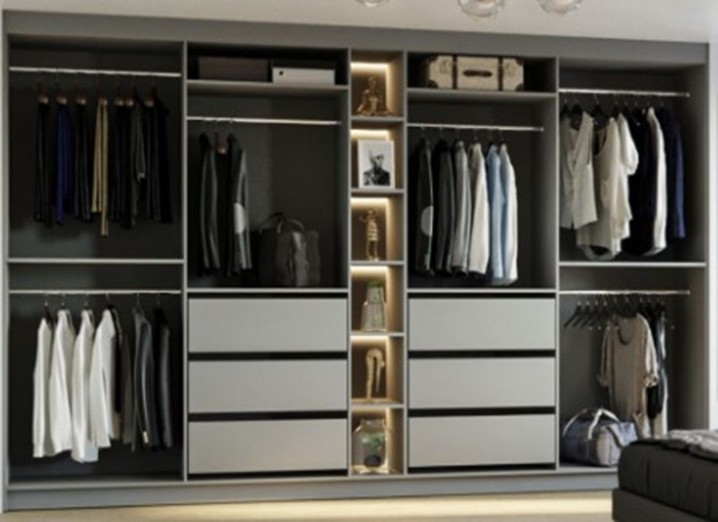
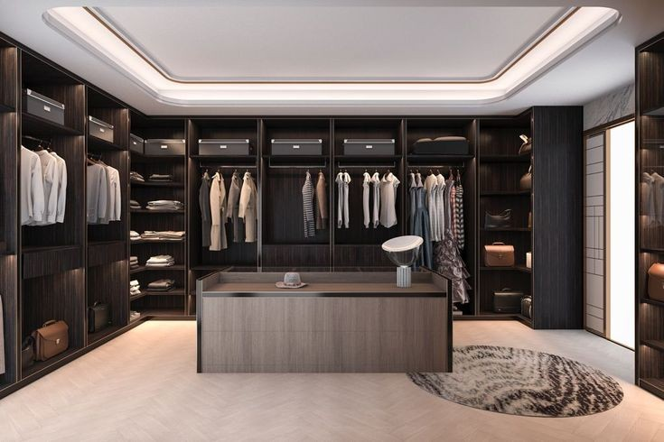
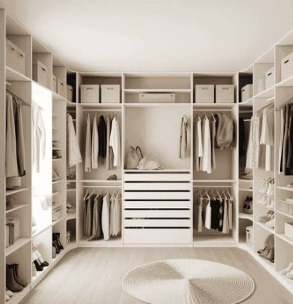
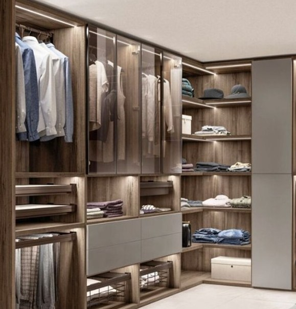
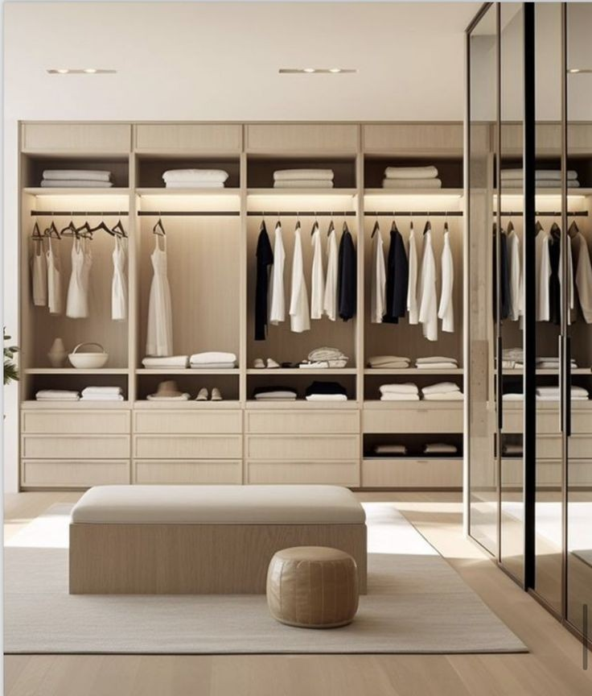
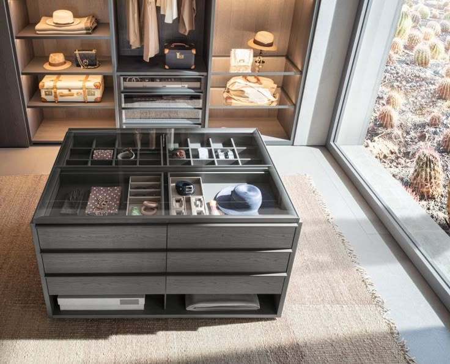
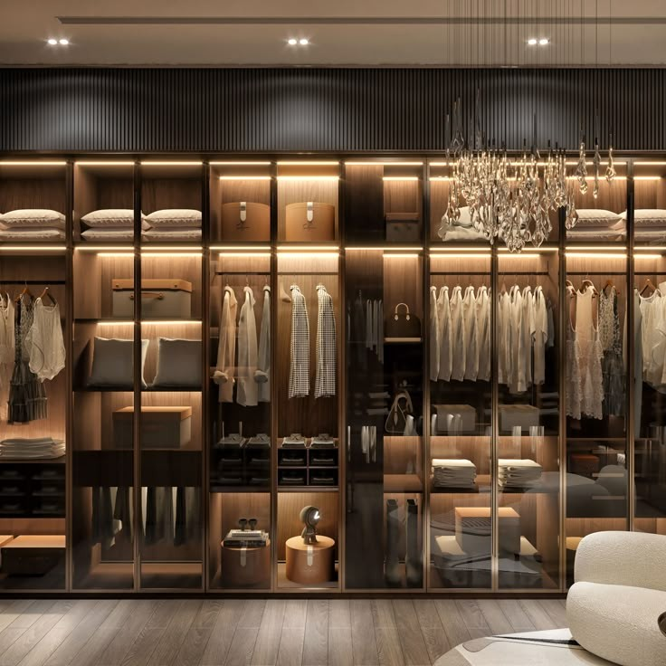
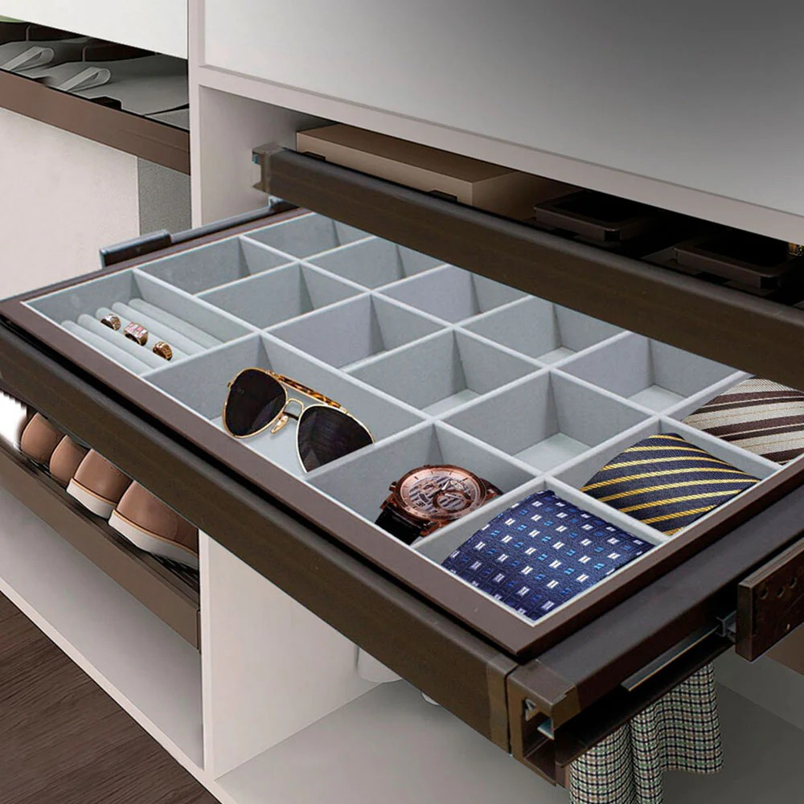

01 / RECTOClóset recto
Distribución lineal frente a un muro, con torres de cajones al centro, secciones de colgado y maletero corrido arriba.

Diseñamos, fabricamos e instalamos vestidores, closets y walk-in closets con isla central, cajones con cierre suave e iluminación LED. Ven al showroom y cotiza tu proyecto.
Proyectamos tu vestidor por tipo de prenda: maletero arriba, ropa doblada en entrepaños de 350 a 450 mm, doble nivel de colgado para camisas y sacos, colgador largo para vestidos y abrigos, y zapateras abajo. Antes de fabricar lo ves en 3D y eliges los acabados reales en el showroom.
Elige la forma que se parece a tu espacio y la marcamos en tu solicitud de cotización.

01 / RECTODistribución lineal frente a un muro, con torres de cajones al centro, secciones de colgado y maletero corrido arriba.

02 / CON ISLAVestidor perimetral de gran formato con una isla central para joyería y accesorios, con cubierta de cristal.

03 / EN UEnvuelve tres muros y aprovecha las esquinas al 100%. Ideal para separar el área de él y la de ella.

04 / EN LUne dos muros con un rinconero de entrepaños y deja libre el centro del espacio.
Las tres se fabrican a la medida. Cambia cómo se construyen, cómo se ven y cuánto inviertes.

Módulos independientes con costado propio: gabinetes, lockers, rinconeros, maleteros e islas. Es la única línea que puede llegar armada de fábrica.
La línea base de comparación.

Una estructura continua de muro a muro con herraje oculto. Comparte costados entre secciones, así que lleva menos divisiones verticales y se ve más limpio.
Ahorro de 14% a 32% frente a Modular*

Los costados miden 400 mm de fondo y las repisas y cajones 600 mm: los entrepaños sobresalen y el vestidor se ve ligero, casi flotante.
Ahorro de 19% a 37% frente a Modular*
*Rangos de ejercicios comparativos de fábrica (versiones con manguete). El ahorro final depende de la configuración, los acabados y los accesorios de tu proyecto.
16 accesorios extraíbles, islas de joyería y correderas ocultas Blum TANDEM y Häfele con cierre suave.

ISLAS 2025Islas de 8 o 16 cajones con organizadores interiores, con o sin cubierta de vidrio.

ILUMINACIÓNLuz fría o cálida en entrepaños, colgadores y vitrinas para encontrar todo de un vistazo.

ACCESORIOSJoyero, pantalonero, corbatero, cinturonero, valet, zapateras telescópicas, cesto de ropa y tabla de planchar integrada.
Walk-in closets, vestidores con isla, en L o en U. Toca cualquier foto para verla completa.
La primera sesión de diseño no tiene costo.
Depende de las medidas, la forma, la línea (Modular, Libre o Light), los acabados y los accesorios que elijas. Por eso cada cotización parte de un diagnóstico de tu espacio. La primera sesión de diseño no tiene costo.
Sí. Además de la profundidad completa de 600 mm, fabricamos con fondo de 400 mm para espacios reducidos. Con la línea Light, los costados de 400 mm ganan espacio de paso.
Modular usa módulos independientes armados con tornillo. Libre es una estructura continua de muro a muro con herraje oculto. Light combina costados de 400 mm con repisas y cajones de 600 mm. En el showroom te ayudamos a elegir la que conviene a tu espacio.
Colección Merino Super Mate (Cloud, Ceniza, Stone y Black), Merino Altos Brillos antiscratch (Onix, Snow y Grafito) y chapas de madera natural (Nogal, Encino Arena, Encino Ámbar y Encino). Los ves y los tocas en el showroom.
Las dos. Trabajamos desde planos arquitectónicos, en obra gris o sobre un clóset que quieres renovar. Revisamos tus planos o levantamos medidas en sitio.
Sí. Tu proyecto tiene 10 años de garantía Finezza, con herrajes europeos originales (Blum, Hettich y Häfele) y acompañamiento directo en obra hasta la entrega.
Sí. Podemos vernos en tu obra o domicilio en Querétaro, o empezar con una videollamada de diagnóstico.
Ya sea que estés construyendo desde planos o renovando tu clóset en Querétaro, te entregamos una propuesta hecha para tu espacio y tu forma de guardar.
Blvd. Bernardo Quintana 7 D, Col. Álamos 2da. Sección
Querétaro, Qro. C.P. 76160
Teléfono: 442 719 7102
WhatsApp: 442 719 7102
Atención personalizada previa cita • Tel. y WhatsApp: 442 719 7102
© 2026 FINEZZA Querétaro • Vestidores y closets a la medida • Blvd. Bernardo Quintana 7 D, Col. Álamos 2da. Sección, Querétaro, Qro.